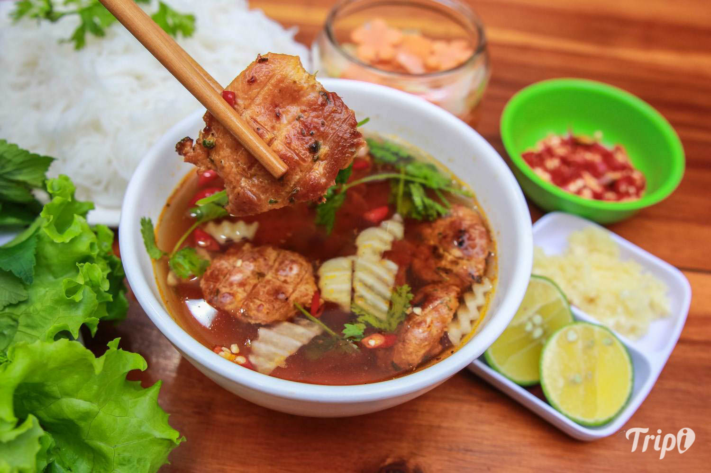
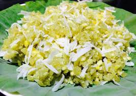
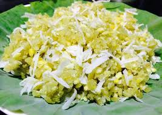
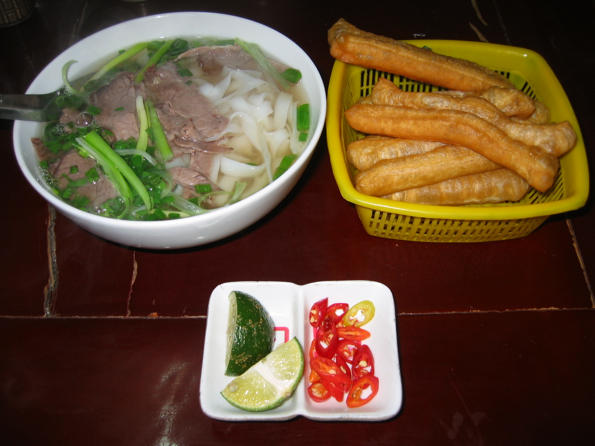
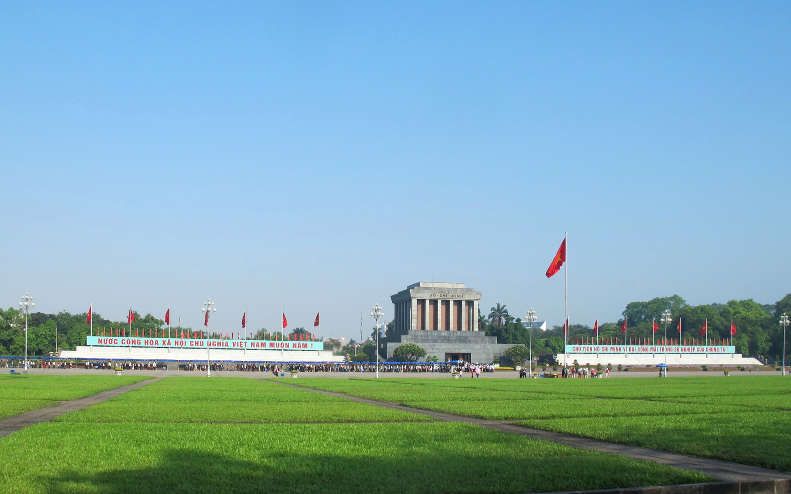
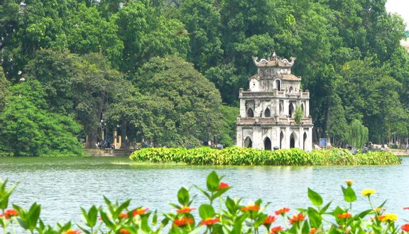
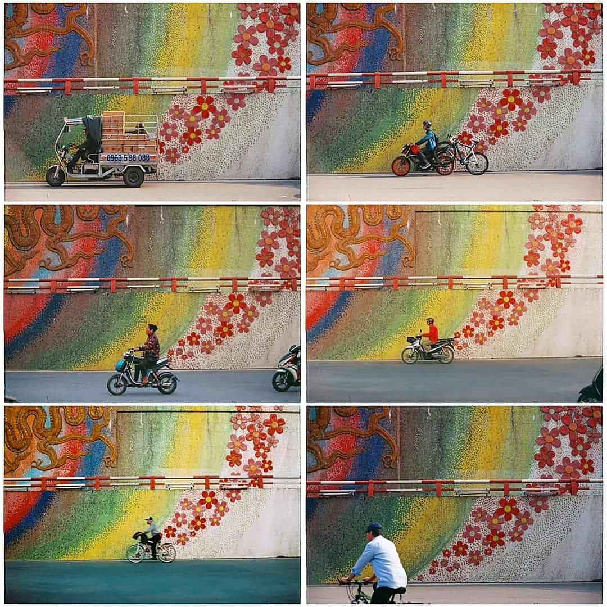

Giới thiệu
Hẳn bạn đã nghe rất nhiều về Hà Nội – Thủ đô hơn 1000 năm tuổi. Không chỉ nổi tiếng với lịch sử lâu đời, giàu bản sắc, văn hóa truyền thống dân tộc, vùng đất này còn được biết đến là một trong những địa điểm thu hút nhiều du khách trong và ngoài nước.Hà Nội nằm ở tả ngạn sông Đà và hai bên đồng bằng sông Hồng. Phía Bắc giáp với tỉnh Vĩnh Phúc và Thái Nguyên, phía Nam giáp tỉnh Hòa Bình, phía Đông giáp với tỉnh Bắc Ninh và Hưng Yên, còn phía Tây giáp tỉnh Vĩnh Phúc. Sau khi được mở rộng, Hà Nội nằm trong top 17 Thủ đô có diện tích lớn nhất thế giới với 3.324,92 km2.
Ẩm thực
Có thể nói ẩm thực là một trong những nét đặc trưng của văn hóa của mỗi vùng, miền,… điều kiện sống của từng vùng sẽ chi phối văn hóa ẩm thực của vùng đó. Đúng vậy, văn hóa ẩm thực Hà Nội có những nét văn hóa ẩm thực chung thì bên cạnh đó nó cũng những đặc trưng riệng biệt mà không vùng hay miền quê nào có được. Hãy cùng tôi tìm hiểu và khám phá “văn hóa ẩm thực” nơi đây nhé.Có thể nói ẩm thực là một trong những nét đặc trưng của văn hóa của mỗi vùng, miền,… điều kiện sống của từng vùng sẽ chi phối văn hóa ẩm thực của vùng đó. Đúng vậy, văn hóa ẩm thực Hà Nội có những nét văn hóa ẩm thực chung thì bên cạnh đó nó cũng những đặc trưng riệng biệt mà không vùng hay miền quê nào có được. Hãy cùng tôi tìm hiểu và khám phá “văn hóa ẩm thực” nơi đây nhé.
1. Bún chả
Nói đến ẩm thực Hà Nội thì không thể không nhắc đến “bún chả”. Để làm được ra những miếng chả thơm, vừa chín tới, màu sắc vàng rộm, vừa giòn vừa dẻo, thì người đầu bếp phải làm khá cầu kỳ và trải qua nhiều công đoạn chế biến. Bún chả được ăn cùng với rau sống và châm nước chấm. Khi ăn sẽ cảm nhận được cái ngậy, béo của thịt, cái mát của rau và mùi thơm của nước chấm.

2. Cốm
Một món đặc sản nữa không thể bỏ qua vì nó mang nét đẹp, sự tinh tế của ẩm thực Hà Nội đó là cốm Làng Vòng. Cốm Vòng quả là một thứ quà đặc biệt trong mọi thứ quà Hà Nội. Làm được những hạt cốm thơm ngon thì phải cốm phải là giống nếp cái hoa vàng, lúa làm cốm khi còn xanh gặt về, đồ chín, giã nhanh, đều tay, sàng sảy, ủ kín mới có được cái loại cốm dẻo và thơm như thế. Còn màu xanh hấp dẫn đó thì do hồ thêm nước lá cơm xôi. Cốm gói trong lá sen là để giữ ẩm và đượm lấy hương thơm ngát của lá sen tơ, làm tăng thêm vị .
 

3. Phở Bò
Phở bò cũng là một trong những món ăn đặc sắc và tinh tế, nó là sự hòa quyện của bánh phở, nước dùng và các gia vị để tạo nên hương vị đậm đà và hấp dẫn. Chế biến được một tô phở đúng, chuẩn không hề đơn giản một chút nào và không phải người đầu bếp nào cũng chế biến được. Khi bạn thưởng thức bạn có thể ăn cùng với quẩy và thêm chút ớt, tiêu, dấm, chanh,.. sẽ giúp món phở thêm ngon và đậm đà hơn.
Bên cạnh sự có sự khéo léo thì người đầu bếp phải mang tấm lòng của mình gửi gắm vào món ăn, đó cũng chính là linh hồn của món ăn. Điều đó đã nên sự khác biệt của ẩm thực Hà Nội. Nếu bạn được thưởng thức những món ăn này dù chỉ một lần chắc chắn bạn sẽ không thể quên được hương vị của nó.

Lịch sử
Hà Nội nằm giữa đồng bằng sông Hồng trù phú, nơi đây đã sớm trở thành một trung tâm chính trị, kinh tế và văn hóa ngay từ những buổi đầu của lịch sử Việt Nam. ... Khi Tây Sơn rồi nhà Nguyễn lên nắm quyền trị vì, kinh đô được chuyển về Huế và Thăng Long bắt đầu mang tên Hà Nội từ năm 1831, dưới thời vua Minh Mạng.

Các địa điểm văn hóa hay khu vui chơi di tích
1.Quảng trường Ba Đình – Lăng Bác
Nếu đã đặt chân tới mảnh đất ngàn năm văn hiến thì Lăng Bác – Quảng trường Ba Đình là địa điểm du lịch ở Hà Nội mà các bạn không thể bỏ qua. Nơi đây là trung tâm chính trị của Việt Nam với nhà Quốc hội, Phủ Chủ tịch, Bảo tàng Hồ Chí Minh,…
Lăng Bác là nơi lưu giữ thi hài của vị lãnh tụ kính yêu. Bên ngoài lăng là những hàng tre xanh bát ngát. Lăng chủ tích mở cửa vào sáng thứ 3,4,5,7 và chủ nhật. Khi vào viếng lăng Bác, bạn chú ý ăn mặc chỉnh tề, không đem theo các thiết bị điện tử ghi hành và giữ trật tự trong lăng.

2. Hồ Gươm
Hồ Gươm hay hồ Hoàn Kiếm là một trong những nơi nên đến ở Hà Nội khi du lịch thủ đô. Nằm ở giữa trung tâm, Hồ Gươm được ví như trái tim của thành phố ngàn năm tuổi này.. Mặt hồ như tấm gương lớn soi bóng những cây cổ thụ, những rặng liễu thướt tha tóc rủ, những mái đền, chùa cổ kính, tháp cũ rêu phong, các toà nhà mới cao tầng vươn lên trời xanh.Hồ Gươm hay hồ Hoàn Kiếm là một trong những nơi nên đến ở Hà Nội khi du lịch thủ đô. Nằm ở giữa trung tâm, Hồ Gươm được ví như trái tim của thành phố ngàn năm tuổi này.. Mặt hồ như tấm gương lớn soi bóng những cây cổ thụ, những rặng liễu thướt tha tóc rủ, những mái đền, chùa cổ kính, tháp cũ rêu phong, các toà nhà mới cao tầng vươn lên trời xanh.Hồ Gươm hay hồ Hoàn Kiếm là một trong những nơi nên đến ở Hà Nội khi du lịch thủ đô. Nằm ở giữa trung tâm, Hồ Gươm được ví như trái tim của thành phố ngàn năm tuổi này.. Mặt hồ như tấm gương lớn soi bóng những cây cổ thụ, những rặng liễu thướt tha tóc rủ, những mái đền, chùa cổ kính, tháp cũ rêu phong, các toà nhà mới cao tầng vươn lên trời xanh.Hồ Gươm hay hồ Hoàn Kiếm là một trong những nơi nên đến ở Hà Nội khi du lịch thủ đô. Nằm ở giữa trung tâm, Hồ Gươm được ví như trái tim của thành phố ngàn năm tuổi này.. Mặt hồ như tấm gương lớn soi bóng những cây cổ thụ, những rặng liễu thướt tha tóc rủ, những mái đền, chùa cổ kính, tháp cũ rêu phong, các toà nhà mới cao tầng vươn lên trời xanh.Hồ Gươm hay hồ Hoàn Kiếm là một trong những nơi nên đến ở Hà Nội khi du lịch thủ đô. Nằm ở giữa trung tâm, Hồ Gươm được ví như trái tim của thành phố ngàn năm tuổi này.. Mặt hồ như tấm gương lớn soi bóng những cây cổ thụ, những rặng liễu thướt tha tóc rủ, những mái đền, chùa cổ kính, tháp cũ rêu phong, các toà nhà mới cao tầng vươn lên trời xanh.

3. Nhà thờ lớn Hà Nội
Nằm ở 40 phố Nhà Chung, phường Hàng Trống, Nhà thờ lớn là một trong những điểm đến thú vị ở Hà Nội, nơi lui tới không chỉ của các tín đồ theo đạo mà còn là địa điểm quen thuộc của giới trẻ, khách du lịch tứ phương. Nhà thờ được thiết kế theo phong cách kiến trúc Gothic trung cổ châu Âu với bức tường xây cao, có mái vòm và nhiều cửa sổ.

4. Con đường gốm sứ
Con đường gốm sứ được xây dựng năm 2008 nhân dịp kỉ niệm 1000 năm Thăng Long – Hà Nội là một trong những địa điểm du lịch độc đáo không thể bỏ qua khi đến với thủ đô. Nơi đây đã được tổ chức kỉ lục Guiness công nhận là bức tranh gốm dài nhất thế giới.

Review khách sạn, homestay
1. Graffti House
Tọa lạc tại thành phố Hà Nội, cách Nhà Thờ Lớn 500 m và Nhà hát múa rối nước Thăng Long 600 m, Graffiti House cung cấp chỗ nghỉ lắp máy điều hòa với tầm nhìn ra quang cảnh thành phố và WiFi miễn phí.Chỗ nghỉ được bố trí phòng tắm riêng đầy đủ tiện nghi với vòi sen và máy sấy tóc, Homestay này có sân hiên cho khách thư giãn.Trong số các điểm tham quan nổi tiếng gần.Graffiti House có Hồ Hoàn Kiếm, Ô Quan Chưởng và trung tâm thương mại Tràng Tiền Plaza. Sân bay gần nhất là sân bay quốc tế Nội Bài, cách chỗ nghỉ 29 km.
2. Amazing stay - homestay
Tọa lạc tại thành phố Hà Nội, cách trung tâm thương mại Vincom Center Nguyễn Chí Thanh 2 km, Amazing stay- homestay, city view, near center Hanoi, NK Cau Giay có tầm nhìn ra thành phố, WiFi miễn phí và chỗ đỗ xe riêng miễn phí.Phòng nghỉ tại đây có tầm nhìn ra sông, khu vực ghế ngồi, máy giặt, bếp đầy đủ tiện nghi cũng như phòng tắm riêng đi kèm máy sấy tóc và đồ vệ sinh cá nhân miễn phí. Để thêm phần thuận tiện cho du khách, chỗ nghỉ có thể cung cấp khăn tắm và ga trải giường với một khoản phụ phí.Amazing stay- homestay, city view, near center Hanoi, NK Cau Giay nằm cách Bảo tàng Dân tộc học Việt Nam 2,8 km và Văn Miếu - Quốc Tử Giám 5 km. Sân bay gần nhất là sân bay quốc tế Nội Bài, nằm trong bán kính 22 km từ chỗ nghỉ.

3. Hanoi Emerald Waters Hotel Valley
Tọa lạc ở thành phố Hà Nội, cách Nhà hát múa rối nước Thăng Long 200 m, Hanoi Emerald Waters Hotel Valley có dịch vụ nhận phòng/trả phòng cấp tốc, phòng nghỉ không gây dị ứng, nhà hàng, WiFi miễn phí trong toàn bộ khuôn viên và quầy bar. Khách sạn 4 sao này còn có dịch vụ phòng và sảnh khách chung. Khách sạn này cũng có lễ tân 24 giờ, bếp chung và dịch vụ thu đổi ngoại tệ cho khách.Phòng nghỉ của khách sạn được trang bị máy điều hòa, truyền hình vệ tinh màn hình phẳng, ấm đun nước, chậu rửa vệ sinh (bidet), máy sấy tóc và bàn làm việc. Ngoài ra, phòng còn có tủ để quần áo và phòng tắm riêng.
Gần chỗ nghỉ có các điểm tham quan nổi tiếng như trung tâm thương mại Tràng Tiền Plaza, Hồ Hoàn Kiếm và Ô Quan Chưởng. Sân bay gần nhất là sân bay quốc tế Nội Bài, cách Hanoi Emerald Waters Hotel Valley 21 km, và chỗ nghỉ cung cấp dịch vụ đưa đón sân bay với một khoản phụ phí.